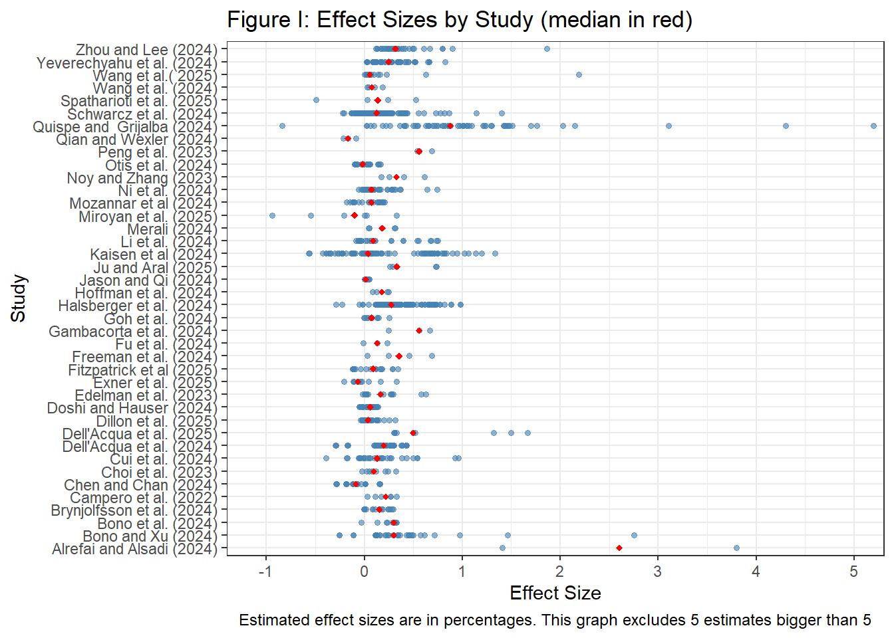
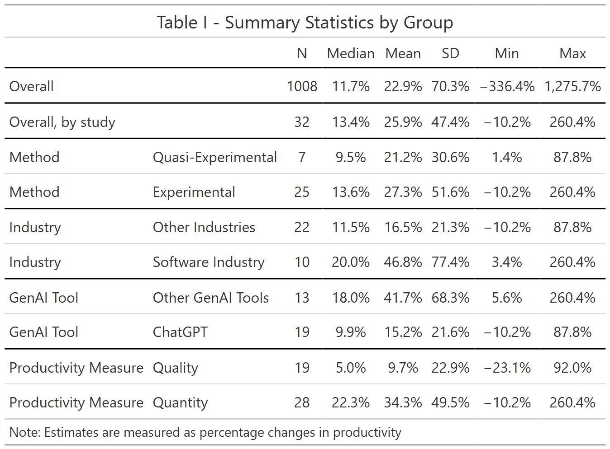
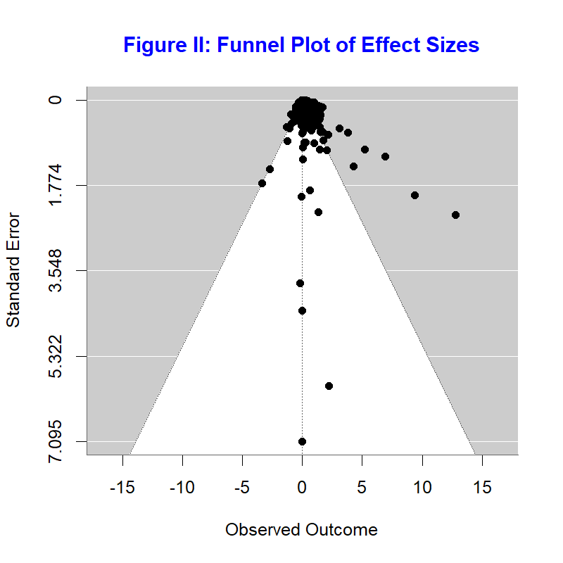
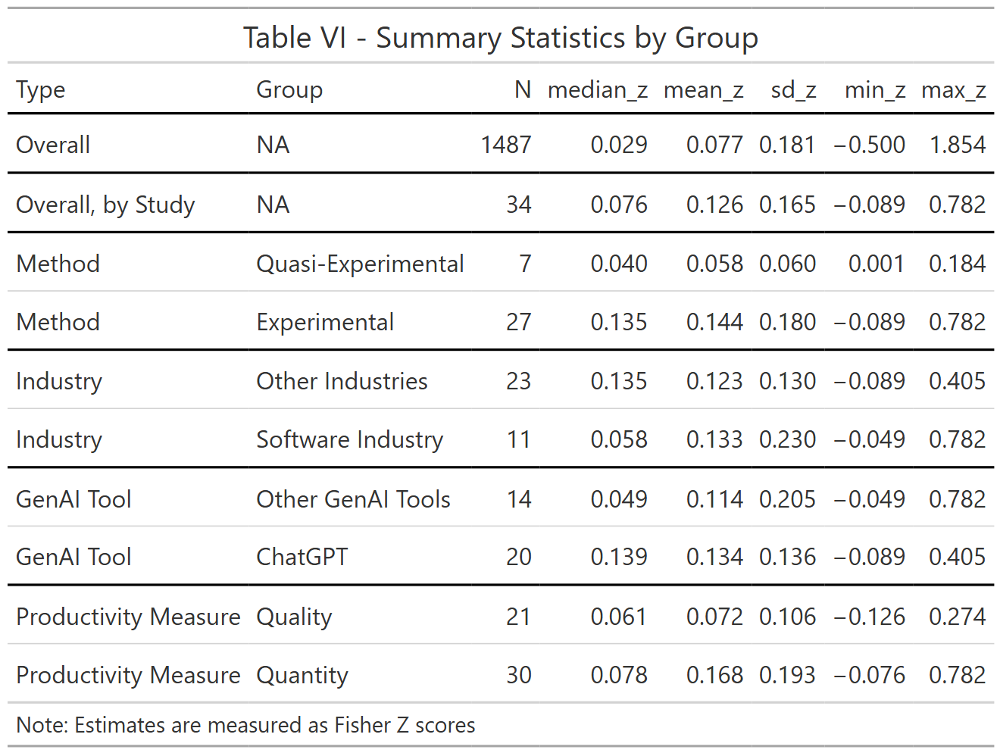

The Impact of Generative AI on Productivity - Results of an Early Meta-Analysis
Abstract
This paper uses meta-analysis to summarize the literature that analyses the impact of generative AI on productivity. While we find substantial heterogeneity across studies, our preferred estimate suggests that on average, across a wide range of tasks, sectors, study methods and productivity measures, the use of GenAI tools increases productivity by 17 %. We further find some evidence that experimental studies show a higher association between GenAI use and productivity than quasi-experimental studies, and weak evidence that the size of the impact of GenAI tools is bigger for quantitative than for qualitative measures of productivity.
Keywords
Generative AI, Productivity, Meta-Analysis
Acknowledgments: We would like to thank Tomas Havranek, Bob Reed and participants to Tomas Havranek’s meta-analysis course at the University of Canterbury, Christchurch for comments.
I. Introduction.
Over the last two years, there has been an explosion of academic literature on the economic impact of Generative AI (GenAI). In this paper, we take stock of part of this literature by doing a meta-analysis of the results of 45 papers that focus on the impact of Gen AI on productivity.
We focus on productivity in a work environment by selecting papers that investigate how the introduction of GenAI affects the quantity and quality of work done, when GenAI is applied to real-life tasks rather than academic tasks or assignments, and typically (but not always) by employees rather than by students.
A meta-analysis of these studies allow us to identify the range of estimates available in the literature, judge the external validity of individual studies, as well as to compute a meta-analytic average of these estimates, reflecting the ‘best’ estimate based on the literature as a whole. Having such numbers is important when estimating or developing scenarios for the macro-economic impact of GenAI. When analyzing the impact of GenAI on economic growth, Briggs and Kodnani (2023) use estimates from academic studies of the impact on productivity of non-generative AI. Similarly, Acemoglu (2024) multiplies the average of the estimates from only 2 studies (0.27, estimates from Noy and Zhang (2023) and Brynjolfsson, Li, and Raymond (2024)) with the share of jobs exposed to GenAI (0.57) to estimate that “the average (overall) cost savings from AI are about 0.27 × 0.57 = 0.154”.
Based on more than 1000 estimates from 45, rather than 2, studies, and after controlling for potential publication bias, our preferred specification suggests that using GenAI to perform a work task on average increases productivity on that task by about 17%.1 We further show substantial heterogeneity in reported estimates suggesting context matters a lot, with weak evidence suggesting quantitative measures of productivity (like time spent producing an item or number of items produced in a given amount of time) experiencing a bigger impact, measured in percentage change, than qualitative measures of productivity (like quality of work produced). There is also some evidence that experimental studies show higher partial correlations between GenAI use and productivity than quasi-experimental studies.
Section II explains how we selected studies and section III discusses the characteristics of these studies. We then discuss different ways to aggregate the estimates (section IV), how we correct for publication bias (sections V and VI) and analyze how study characteristics affect estimates (section VII). Section VIII to XII repeat these steps for a different outcome measure, the partial correlation (Fisher Z score) between GenAI use and productivity, rather than the estimated percentage change in productivity associated with GenAI use. The final section concludes.
II. Finding studies that estimate the impact of GenAI on Productivity.
To find relevant studies, we conducted a systematic search of literature on Gen AI and productivity using Scopus and Google Scholar.
We started from the primary keywords “Gen AI” and “productivity”, restricting the search to titles, abstracts, and keywords to ensure greater accuracy in both the initial and subsequent expanded searches.2
We selected Scopus as the initial database as the keyword analysis tool embedded in Scopus can automatically extract keywords from retrieved studies, enabling one to efficiently identify additional relevant keywords. We iteratively expanded the initial search query and continued searching until no new relevant keywords emerged. This led to an expanded search query –“TITLE-ABS-KEY (”Gen* AI” OR “generative artificial intelligence” OR “large language model” OR “LLM” OR ChatGPT OR Copilot) AND TITLE-ABS-KEY (productivity OR performance OR quality OR quantity)”.
We restricted the search to English-language literature and limited the publication years to 2023 and later, considering the widespread adoption of ChatGPT since 2023. As a result, we retrieved 687 studies on Scopus.
We then conducted a Google Scholar search using the expanded query and retrieved the first 500 results sorted by relevance. We combined all retrieved studies and manually reviewed the titles and abstracts and skimmed the content of the retrieved studies. To be eligible, studies had to use empirical data to demonstrate the actual impact of the use of GenAI by humans on productivity outcomes in workplace settings. We excluded studies that focused, for example, on GenAI’s effect on perceived productivity of workers or course outcomes of students. We also excluded studies that compare the performance of humans to the performance of GenAI tools without (substantial) human help (for example Csaszar, Ketkar, and Kim (2024) or Humlum and Vestergaard (2025)). As a result, searching with keywords helped us find 30 relevant studies.
Finally, we checked the references of the selected studies to track additional eligible studies and continued to track social media for new studies. This helped us identify 15 additional studies. In total, we retained 45 eligible studies.
III. Descriptive Statistics
As a starting point, we classified, based on the abstract, each study as finding either a positive effect, a mixed effect or finding no effect. Based on the abstract, 31 studies suggest GenAI improves productivity, 12 find mixed effects, with GenAI increasing productivity for some tasks or skill-levels but decreasing for others, while two studies found no significant effect (Butler et al. (2024), Goh et al. (2024)). Twenty studies include a measure of the percent change in productivity in their abstract, showing an average productivity improvement of about 33%.
Twenty-six papers included results about who benefited most from GenAI tools. 16 papers concluded that GenAI tools benefit those with lower skills/experience the most, 6 found that who benefited most depended on the specific outcome measure, while 4 found GenAI benefited high performers most or all skill-levels as much.
It is further worth mentioning that 13 studies mentioned they used GenAi tools for their study. Besides for copy-editing, GenAI has been used for graphs (Dell’Acqua et al. (2024), Wiles et al. (2024) ), to classify observations into categories (Wiles et al. (2024), Brynjolfsson, Li, and Raymond (2024), Yeverechyahu, Mayya, and Oestreicher-Singer (2024)) or grade content or performance (Wiles et al. (2024), Freeman et al. (2024), Haslberger, Gingrich, and Bhatia (2024)). We have used, with mixed success, ChatGPT to extract estimates from tables, search for and understand information about meta-analytic techniques and standard errors, and to improve the R code.
Figure I and Table I further highlights the diversity across the (41) studies for which we have estimates in terms of percentage changes.

For each of the identified studies, we coded, besides estimates and standard errors3, the following study-level characteristics.
Is the study experimental or not? 33 studies randomly provided access to a GenAI tool to some subjects (for example, K. Peng et al. (2023) or Choi, Monahan, and Schwarcz (2023)) but others (8 studies) used quasi-experiments like the introduction of ChatGPT in only some countries (Quispe and Grijalba (2024)), the ban on ChatGPT in Italy (Kreitmeir and Raschky (2024)), CoPilot only affecting software start-ups but not non-software related start-ups (Asam and Heller (2024)), CoPilot being introduced early to some programmers (Hoffmann et al. (2024)) or the availability of CoPilot for Python but not for R (Yeverechyahu, Mayya, and Oestreicher-Singer (2024)).
What is the main sector in which the work takes place? The most frequent (13 studies) task was coding (software industry), but other tasks included designing advertisements (Fu et al. (2024)), product innovation (Dell’Acqua et al. (2025)), blogging (Kaisen, Li, and Lu (2024)), office tasks (Freeman et al. (2024)), customer support (Ni et al. (2024)), writing short stories (Doshi and Hauser (2024)), tutoring (R. E. Wang et al. (2025)) and running a start-up (Otis et al. (2024)).
For what specific GenAI tool is the impact on productivity analysed? Most studies looked at the impact of ChatGPT (23, for example, Quispe and Grijalba (2024) or Freeman et al. (2024)), or CoPilot (for example, Hoffmann et al. (2024) or Butler et al. (2024)), while few looked at company-specific GenAI tools (for example, Ni et al. (2024)).
Note there are many other dimensions in which these estimates differ. For example, some papers use control variables in a regression analysis, while other do not. Or some estimates were obtained using clustered standard errors, while others not. Or the incentives provided to participants in some experiments were higher than in other experiments. Given we have a a relatively small number of papers and hence, our ability to figure out what characteristics really cause estimates to be different is limited, we will focus here on a small number of study characteristics, which we think are likely to be important. This means one should be cautious when interpreting differences in estimate sizes across estimate or paper characteristics.
Besides characteristics of the studies, we looked at one characteristic of the outcome variable, subdividing estimates into impacts on quantitative outcomes (35 studies) like speed or number of items produced (for example, Gambacorta et al. (2024) counts the number of lines of code produced over a period of 6 weeks, or Asam and Heller (2024) uses time-to-initial funding for start-ups) and impacts on qualitative measures (25 studies, for example, Doshi and Hauser (2024) measures the creativity of stories produced with or without the help of GenAI, or Fu et al. (2024) measures the ‘usefulness’ of designs).
The fact that different studies use different outcome measures makes it hard to compare estimates across studies. For example, how can one compare a study that finds GenAI increases the output by 5 lines of code per hour to a study that fins GenAI increases the creativity score by 1 on a scale from 0 to 10?
To have a measure of the impact on productivity that is comparable across studies, we transformed, where possible, estimates to percentage changes, relative to the base category of productivity when no GenAI tool was available. Unfortunately, 4 out of 45 studies do not provide enough information to compute this measure.4
We therefore also use a more standard approach in the meta-analysis literature by focusing on the partial correlation between the outcome and the treatment, through Fisher Z scores, which are derived from estimated t-statistics. So we will present two sets of estimates, the first one being the more intuitive measure (percent changes, table I), the second (Fisher Z scores, table VII below) being available for more estimates.
Table I shows we have a total of 1161 estimates from 41 studies, with a median estimate of 14.7% and a mean of 26.2%. Note further that 83.3% of the estimates is positive.
Aggregating estimates first by studies (so studies with more estimates do not get more weight) and then across studies (the ‘overall, by study’ statistic) shows similar results. It’s also worth noting that standard deviation and the range of estimates is very big, reflecting the heterogeneity in outcomes across studies.
Table I further suggests that studies set in the software industry, studies not focusing on ChatGPT, or studies using quantitative (rather than qualitative) outcomes find higher productivity. Of course, as mentioned above, one should be careful interpreting these differences as causal given the correlation between these and other, omitted, characteristics.
IV. Weighing Estimates to Get an Overall Estimate.
So far we focused on the heterogeneity in the estimates. But how can we now best aggregate these results to get one number that summarizes the findings of the literature? There are multiple ways one can aggregate estimates across studies. Table I provided statistics that weighed all estimates equally (the ‘overall’ statistics) or weighed estimates so all studies had the same weight, independent of how many estimates came from a given study (the ‘overall, by study’ statistics). However, one could argue that a more efficient estimate can be obtained if more precisely estimated estimates would be given a higher weight. In the meta-analysis literature, several ways to weigh estimates have been proposed. In table II below, we provide, in addition to the OLS estimate (which corresponds to the mean estimate of Table I), a fixed effect estimate, a random effect estimate and two 3-level model estimates.
The OLS model assumes that the estimate i (out of N) comes from a distribution with mean \(\beta_0\) and variance \(\sigma^2\).
\[ Estimate_i = \beta_0 + \epsilon_i, \quad \epsilon_i \sim N(0, \sigma^2), \quad i = 1, \dots, N \]
All estimates are thus assumed to come from the same distribution, and the only reason why estimates differ is because of sampling error.
The fixed effects model maintains the assumption of one single true effect but relaxes the assumption of homoscedasticity and gives higher weight to more precise estimates (that is, weighted least squares).
\[ Estimate_i = \beta_0 + \epsilon_i, \quad \epsilon_i \sim N(0, se(Estimate_i)^2), \quad i = 1, \dots, N \]
The random effects model allows for an additional normally distributed random effect with mean \(\theta_i\) and variance \(\tau^2\).
\[ Estimate_i = \beta_0 + \theta_i + \epsilon_i, \quad \theta_i \sim N(0, \tau^2), \quad \epsilon_i \sim N(0, se(Estimate_i)^2), \quad i = 1, \dots, N \]
In other words, there is unique true effect for each estimate which consists of the common effect \(\beta_0\) and a draw from a common normal distribution.
The three level, hierarchical effects meta-analysis, further modifies this equation to recognize that estimates from the same study are likely to have a common effect.
\[ Estimate_{ij} = \beta_0 + \phi_{ij} + \theta_{i} + \epsilon_{ij}, \quad \theta_j \sim N(0, \tau^2), \quad \phi_{ij} \sim N(0, \upsilon^2), \quad \epsilon_{ij} \sim N(0, se(Estimate_{ij})^2), \quad i = 1, \dots, S, \quad j = 1, \dots, G \]
So in addition to the common effect \(\beta_0\) and the random estimate level effect \(\theta_i\), there is also a study level effect, \(\phi_{ij}\) .
Finally, he 3L-VCV model, also known as the correlated and hierarchical effects meta-analysis model further allows sampling errors to be correlated at the study level. The later correlation is not estimated, however, instead it needs to be imposed. We chose a value of 0.2 as this typically minimized the Akaike Information Criterion (AIC) and hence fitted the data well.
Table II - Averaging Estimates using Various Weights | |||||
|---|---|---|---|---|---|
| OLS | Fixed Effects | Random Effects | 3L Effects | 3L-VCV Effects |
overall | 0.262 | 0.015 | 0.189 | 0.204 | 0.167 |
(0.073***) | (0.001***) | (0.033***) | (0.035***) | (0.029***) | |
Num.Obs. | 1161 | 1161 | 1161 | 1161 | 1161 |
AIC | 2268.4 | 41597.7 | 506.7 | 117.1 | 33.4 |
Notes: The estimated 'overall' effect is the result of a regression of the estimate of the impact of GenAI on productivity, measured as percentage changes in productivity, on a constant. The different models make different assumptions about the error terms as described in the text. | |||||
Table II shows that if we assume all estimates come from the same distribution (fixed effects), the best estimate is an extremely small impact. Given the diversity of the papers in the sample, the fixed effect assumption is further unlikely to hold and the random effects estimator makes more sense.5 The random effect is closer to the OLS estimate and suggests a 18.9% improvement in productivity associated with GenAI. The random effects estimator assumes all estimates are independent, but since many estimates come from the same study, the 3 level estimators, which allow for correlations between groups of estimates, are more realistic. Based on the minimum AIC criterion, our preferred estimate of the overall average comes from the 3-level VCV model which shows using GenAI when performing a task is associated with an increase in productivity on that task of 16.7%.6
V. Correcting for Publication Bias
So far, we assumed that there was no publication bias: that is, researchers are as likely to publish significant and insignificant results. However, in reality researchers might be less likely to show insignificant results as they know there is a disproportionate interest for significant results.
The standard way to check for publication bias is the funnel plot. In the absence of publication bias, there should not be a relationship between the estimate and its standard error. The funnel plot in figure II plots the preciseness of the estimate against the estimated effect size.

If there is no publication bias one should see most estimates in the funnel. In our case, we see more estimates at the right side of the funnel than at the left-side, suggesting there could be publication bias.
Table III - Publication Bias - FAT-PET | |||||
|---|---|---|---|---|---|
| OLS | Fixed Effects | Random Effects | 3L Effects | 3L-VCV Effects |
intercept | 0.093 | 0.014 | 0.073 | 0.082 | 0.074 |
(0.108) | (0.001***) | (0.038+) | (0.037*) | (0.028*) | |
St. Error | 1.458 | 2.810 | 1.604 | 1.451 | 1.512 |
(1.208) | (0.538***) | (0.493*) | (0.397**) | (0.271***) | |
Num.Obs. | 1161 | 1161 | 1161 | 1161 | 1161 |
AIC | 1844.4 | 32583.7 | 251.9 | -64.4 | -71.2 |
Notes: The table shows the result of a regression of the estimate of the impact of GenAI on productivity, measured as percentage changes in productivity, on a constant and the standard error of the estimate, to control for publication bias. The different models make different assumptions about the error terms as described in the text. | |||||
To incorporate publication bias in the weighting models described above, we include the standard error of estimates in the regression models (the so-called FAT-PET-test). This variable will allow to control for the possible link between the standard error and the estimated effect size. In this regression, the intercept then becomes the estimated effect size in case of zero publication bias.
Table III shows some mixed results in terms of publication bias: while all coefficients are positive, suggesting more precise estimates (which have smaller standard errors) tend to show smaller effect sizes, the estimates are not always statistically significant. Once we control for the potential bias, the estimate of the overall effect become smaller, from 16.7% for the 3 level VCV estimate which assumes no publication bias, to 7.4% once publication bias is taken into account.
VI. PEESE Analysis
The traditional next step after finding that the overall effect is different from zero, is to do a regression including the square of the standard error as a control rather than the standard error itself, the idea being that theoretically publication bias should be non-linearly related to the estimated effect size. This is the so-called PEESE test.
Table IV - Publication Bias - PEESE | |||||
|---|---|---|---|---|---|
| OLS | Fixed Effects | Random Effects | 3L Effects | 3L-VCV Effects |
intercept | 0.250 | 0.015 | 0.177 | 0.189 | 0.167 |
(0.067***) | (0.001***) | (0.032***) | (0.031***) | (0.028***) | |
St. Error^2 | 0.164 | 3.390 | 1.168 | 0.953 | 0.611 |
(0.470) | (2.160) | (1.044) | (0.836) | (0.701) | |
Num.Obs. | 1161 | 1161 | 1161 | 1161 | 1161 |
AIC | 2181.6 | 40628.3 | 405.9 | 51.1 | 10.1 |
Notes: The table shows the result of a regression of the estimate of the impact of GenAI on productivity, measured as percentage changes in productivity, on a constant and the square of the standard error of the estimate, to control for publication bias. The different models make different assumptions about the error terms as described in the text. | |||||
Interestingly, the PEESE results in table IV suggest there is no significant non-linear publication bias, and hence bring our preferred 3-level VCV estimates back up to a 16.7% increase in productivity.7
VII. Heterogeneity Analysis
To further try to explain why estimates are different we next include 4 dummies, 3 reflecting differences between studies, whether the study was experimental or not, whether the study was focusing on the Software Industry or not and whether ChatGPT was the GenAI tool or not, and one regression-level variable, whether the outcome was a measure of quantity or not.8
Table V - Heterogeneity Analysis | |||||
|---|---|---|---|---|---|
| OLS | Fixed Effects | Random Effects | 3L Effects | 3L-VCV Effects |
intercept | 0.208 | 0.125 | 0.147 | 0.139 | 0.109 |
(0.187) | (0.069) | (0.112) | (0.117) | (0.105) | |
St. Error^2 | 0.167 | 3.077 | 1.116 | 0.944 | 0.609 |
(0.451) | (1.993) | (0.964) | (0.826) | (0.703) | |
Quantity | 0.241 | -0.035 | 0.142 | 0.151 | 0.145 |
(0.156) | (0.038) | (0.079+) | (0.108) | (0.105) | |
Software | -0.014 | 0.063 | -0.026 | 0.005 | -0.009 |
(0.126) | (0.043) | (0.073) | (0.096) | (0.090) | |
Experiment | -0.258 | -0.041 | -0.099 | -0.042 | -0.011 |
(0.247) | (0.033) | (0.079) | (0.097) | (0.072) | |
ChatGPT | 0.158 | -0.071 | 0.054 | -0.014 | -0.028 |
(0.145) | (0.043) | (0.072) | (0.088) | (0.081) | |
Num.Obs. | 1161 | 1161 | 1161 | 1161 | 1161 |
AIC | 2091.3 | 26636.6 | 287.0 | -37.4 | -71.8 |
Notes: The table shows the result of a regression of the estimate of the impact of GenAI on productivity, measured as percentage changes in productivity, on a constant, the square of the standard error of the estimate (to capture publication bias) and several study characteristics. The different models make different assumptions about the error terms as described in the text. | |||||
Table V shows it’s hard to conclude much about what drives heterogeneity as all estimated coefficients are insignificant. That being said, in terms of size of the estimated effects, the impact on quantity seems substantially bigger (about 14.5 percentage points) than the impact on quality. If we set the other characteristics at their mean value and the standard error squared at 0 (a so-called best practice regression), the average for qualitative studies is about 8.0% but insignificant (se=6.8%), while the average for quantitative studies is sizeable at 22.5% and significant (se=5.2%).
Similarly, relative to other GenAI tools, the impact of ChatGPT seems smaller (about -2.8 percentage points) than the impact of other GenAI tools. If we set the other characteristics at their mean value and the standard error squared at 0, the average for ChatGPT is 14.5% (se=3.6% ), while the average for other GenAI tools is more sizeable at 17.3% (se=6.7%).
Finally, the estimated size of the impact of industry or method is relatively small.
Of course, one should be careful in interpreting these differences, not only because we find they are statistically insignificant, but also because omitted variables could be correlated both with the effect size and the included characteristics.
VIII: Using Fisher Z measures rather than % changes
In the above analysis, we used estimated percentage changes as variable of interest. Not all studies provide estimates that can be transformed into percentage changes in productivity, for example because the outcomes measures used are standardized values. Similarly, not all studies provide the mean level of outcome without AI, for all of the regressions used in the study.
As an alternative, we therefore repeat the above regression using Fisher Z measures. Fisher Z is a transformation of the partial correlation coefficient r, the latter being a function of the t statistic and the degrees of freedom (df).
\[ r_i = \frac{t_i}{\sqrt{t_i^2 + (df_i)}} \]
\[ Z_I = \frac{1}{2} \ln \left( \frac{1+r_i}{1-r_i} \right) \]
The Fisher Z statistics can be categorized as “small”, “medium” and “large” effects based on cut-off values from Xue, Reed, and Aert (2024).

Table VI shows descriptive stats. There are almost twice as many Fisher Z estimates, about 1900 estimates compared to about 1100 for the percentage changes in table I. The median Fisher Z value is about 0.029 and the mean about 0.077. Different studies have different number of estimates so in the overall average, the studies with more estimates get higher weight. If we give each study the same weight, by taking the median estimate within each study and then compute descriptive statistics, we get a median Fisher Z score of 0.073 and the mean of about 0.112. Xue, Reed, and Aert (2024) suggest thresholds of 0.1, 0.23 and 0.41 for small, medium and large Fisher Z values, suggesting the partial correlations we find between productivity and GenAI use are small to medium sized.
Table VI further suggests that experimental studies and studies evaluating ChatGPT show a stronger association between productivity and GenAI use.
IX. Weighting Estimates - Fisher Z
Table VII - Averaging Estimates using Various Weights % | |||||
|---|---|---|---|---|---|
| OLS | Fixed Effects | Random Effects | 3L Effects | 3L-VCV Effects |
overall | 0.077 | 0.007 | 0.063 | 0.109 | 0.103 |
(0.023***) | (0.001***) | (0.020**) | (0.023***) | (0.020***) | |
Num.Obs. | 1934 | 1934 | 1934 | 1934 | 1934 |
AIC | -1295.7 | 68372.8 | -1936.7 | -3121.1 | -3051.7 |
Notes: The estimated 'overall' effect is the result of a regression of a Fisher Z score, on a constant. The different models make different assumptions about the error terms as described in the text. | |||||
Table VII reweighs the Fisher Z estimates, giving higher weights to more precise estimates. The model with the lowest AIC is now the 3-level method (without VCV, so putting rho at zero) suggest the overall average Fisher Z score to be about 0.109 which just meets the medium effect threshold. Of course, this estimate does not account for publication bias.
X. Correcting for Publication Bias - Fisher Z
Table VIII adds the standard error of the Fisher Z score to the regression and suggests there are some signs of publication bias, though the publication bias is insignificant for the models with the lowest AIC score.
Table VIII - Publication Bias % - PET | |||||
|---|---|---|---|---|---|
| OLS | Fixed Effects | Random Effects | 3L Effects | 3L-VCV Effects |
intercept | 0.012 | 0.006 | 0.012 | 0.093 | 0.091 |
(0.017) | (0.000***) | (0.015) | (0.027**) | (0.025**) | |
Standard Error | 1.756 | 1.909 | 1.751 | 0.288 | 0.232 |
(0.259***) | (0.709*) | (0.341***) | (0.607) | (0.516) | |
Num.Obs. | 1934 | 1934 | 1934 | 1934 | 1934 |
AIC | -1821.3 | 61840.8 | -2294.4 | -3120.7 | -3051.1 |
Notes: The estimated 'overall' effect is the result of a regression of the Fisher Z score on a constant and the standard error of the Fisher Z score as a control variable, to capture publication bias. The different models make different assumptions about the error terms as described in the text. | |||||
Controlling for publication bias reduces the association between GenAI and productivity somewhat to about 0.093
XI. PEESE Analysis - Fisher Z
Having confirmed an effect is likely to exist in the PET regression, we next run the PEESE procedure which controls for the squared standard error (instead of just the standard error).
Table IX - Publication Bias - PEESE | |||||
|---|---|---|---|---|---|
| OLS | Fixed Effects | Random Effects | 3L Effects | 3L-VCV Effects |
intercept | 0.061 | 0.007 | 0.048 | 0.098 | 0.103 |
(0.020**) | (0.001***) | (0.019*) | (0.020***) | (0.021***) | |
St. Error^2 | 4.279 | 18.923 | 7.744 | 1.705 | -0.006 |
(1.500**) | (7.973+) | (3.113) | (0.608) | (0.751) | |
Num.Obs. | 1934 | 1934 | 1934 | 1934 | 1934 |
AIC | -1612.2 | 65819.7 | -2143.6 | -3123.3 | -3050.9 |
Notes: The estimated 'overall' effect is the result of a regression of the estimate of the impact of GenAI in productivity, measured as percentage changes in productivity, on a constant and the square of the standard error of the estimate, to control for publication bias. The different models make different assumptions about the error terms as described in the text. | |||||
Interestingly, we again find less evidence of publication bias once we control for the square of the error term, and the best estimates of the overall effect again gain in size almost reaching the medium effect size threshold (0.098).
XII. Heterogeneity Analysis - Fisher Z
Interestingly, a heterogeneity analysis suggest little difference in partial correlation between GenAI tools use and outcomes measured in quality or quantity, between different industries or GenAI tools.
Table X - Heterogeneity Analysis % | |||||
|---|---|---|---|---|---|
| OLS | Fixed Effects | Random Effects | 3L Effects | 3L-VCV Effects |
intercept | 0.000 | 0.006 | 0.004 | 0.004 | 0.001 |
(0.033) | (0.000***) | (0.032) | (0.021) | (0.021) | |
St. Error^2 | 3.912 | 18.996 | 6.547 | 1.519 | -0.267 |
(0.942***) | (8.110+) | (2.016+) | (0.731) | (0.860) | |
Quantity | -0.007 | 0.011 | -0.009 | 0.007 | 0.009 |
(0.037) | (0.007) | (0.034) | (0.015) | (0.015) | |
Software | 0.023 | 0.006 | 0.007 | 0.020 | 0.020 |
(0.041) | (0.014) | (0.033) | (0.044) | (0.042) | |
Experiment | 0.070 | 0.001 | 0.052 | 0.081 | 0.085 |
(0.035*) | (0.008) | (0.032) | (0.034*) | (0.034*) | |
ChatGPT | 0.023 | -0.010 | 0.028 | 0.041 | 0.049 |
(0.032) | (0.010) | (0.029) | (0.036) | (0.035) | |
Num.Obs. | 1934 | 1934 | 1934 | 1934 | 1934 |
AIC | -1700.1 | 61464.0 | -2237.9 | -3122.9 | -3052.2 |
Notes: The estimated 'overall' effect is the result of a regression of the Fisher Z score, on a constant, the square of the standard error of the Fisher Z score (to capture publication bias) and several study characteristics. The different models make different assumptions about the error terms as described in the text. | |||||
But there is evidence that experimental studies have Fisher Z scores that are about 0.081 bigger than the Fisher Z scores of quasi-experimental studies.
Conclusions
In the short period of about two and a half years since Generative AI tools like CoPilot and ChatGPT were launched, a flurry of papers analyzing the impact of these tools on productivity in the workplace have been written. By now, these studies span a large number of settings, from writing software, doing data analysis, developing marketing ads, doing legal analysis to writing blogs or stories. In this paper, we summarize this literature and perform a meta-analysis on more than 1000 estimates from 45 studies.
We find that the vast majority of studies finds a positive impact of the use of GenAI tools on productivity, though about a quarter warn that GenAI tools can have negative effects for the productivity of some people or some outcomes.
Our analysis finds little evidence that publication bias is a major factor in this literature and that there is substantial heterogeneity in the estimated effect size. Our preferred specifications (3-level models) suggest that the overall average estimated effect, across studies, of GenAI use in a task on productivity in that task is about 17%. We further find that association between GenAI use and productivity as measured by a Fisher Z score (which is based on the partial correlation) is about 0.1, which is at the threshold between a small and medium effect.
Differences in study or estimate characteristics have limited power in explaining differences across estimated effect sizes. Estimates that measure the quantitative impact of GenAI tools are on average, about 14.5 percentage points higher than estimates that measure the qualitative impact, though this difference is not statistically significant. Similarly, the Fisher Z score does not show much difference between qualitative than quantitative studies. We do find, however, that Fisher Z scores (but not percentage changes) are significantly higher for experimental studies than for quasi-experimental studies.
While about a third of the studies we analyzed explicitly indicated they used GenAI tools, none of these studies provided an estimate of how much time they saved writing the paper or how much the quality of their paper increased as the result of using these tools. This study, and our experience writing this paper confirms this, suggest 17% is a reasonable estimate. That being said, this review is a review of the early studies of GenAI on productivity. As GenAi tools might continue to get better, updating this meta-analysis in the future might well be possible with much less help of the current authors.
List of Studies Used in the Meta-Analysis.
Alrefai and Alsadi (2024), Asam and Heller (2024), Bono, Grana, and Xu (2024), Bono and Xu (2024), Brynjolfsson, Li, and Raymond (2024), Butler et al. (2024), Campero et al. (2022), Chen and Chan (2024), Choi, Monahan, and Schwarcz (2023), Cui et al. (2024), Dell’Acqua et al. (2024), Dell’Acqua et al. (2025), Doshi and Hauser (2024), Edelman, Ngwe, and Peng (2023), Exner et al. (2025), Fitzpatrick et al. (2025), Freeman et al. (2024), Fu et al. (2024), Gambacorta et al. (2024), Goh et al. (2024), Haslberger, Gingrich, and Bhatia (2024), Hoffmann et al. (2024), Ju and Aral (2025), Kaisen, Li, and Lu (2024), Kreitmeir and Raschky (2024), Li et al. (2024), Merali (2024), Miroyan et al. (2025), Mozannar et al. (2024), Ni et al. (2024), Noy and Zhang (2023), Otis et al. (2024), K. Peng et al. (2023), S. Peng et al. (2024), Qian and Wexler (2024), Quispe and Grijalba (2024), Schwarcz et al. (2025), Spatharioti et al. (2025), W. Wang et al. (2024), R. E. Wang et al. (2025), Weber et al. (2024), Wiles et al. (2024), Wiske Dillon et al. (2025), Yeverechyahu, Mayya, and Oestreicher-Singer (2024), Yu and Qi (2024), Zhou and Lee (2024)
References.
Acemoglu, Daron. 2024. “The Simple Macroeconomics of AI.” https://economics.mit.edu/sites/default/files/2024-04/The%20Simple%20Macroeconomics%20of%20AI.pdf.
Alrefai, Adam, and Mahmoud Alsadi. 2024. “Large Language Models for Documentation: A Study on the Effects on Developer Productivity.” Independent Thesis. https://www.diva-portal.org/smash/record.jsf?pid=diva2%3A1863966&dswid=-8487.
Asam, Dominik, and David Heller. 2024. “Generative AI and Firm-Level Productivity: Evidence from Startup Funding Dynamics.” SSRN. https://ssrn.com/abstract=4877505.
Bono, James, Justin Grana, and Alec Xu. 2024. “Generative AI and Security Operations Center Productivity: Evidence from Live Operations.” https://arxiv.org/abs/2411.03116.
Bono, James, and Alec Xu. 2024. “Randomized Controlled Trials for Security Copilot for IT Administrators.” https://arxiv.org/abs/2411.01067.
Briggs, Joseph, and Devesh Kodnani. 2023. “The Potentially Large Effects of Artificial Intelligence on Economic Growth.” Goldman Sachs Report. https://doi.org/https://www.gspublishing.com/content/research/en/reports/2023/03/27/d64e052b-0f6e-45d7-967b-d7be35fabd16.html.
Brynjolfsson, Erik, Li Dannielle, and Lindsey Raymond. 2024. “Generative AI at Work.” NBER Working Paper Series 31161. https://www.nber.org/papers/w31161.
Butler, Jenna, Jina Suh, Sankeerti Haniyur, and Constance Hadley. 2024. “Dear Diary: A Randomized Controlled Trial of Generative AI Coding Tools in the Workplace.” arXiv. https://arxiv.org/abs/2410.18334.
Campero, Andres, Michelle Vaccaro, Jaeyoon Song, Haoran Wen, Abdullah Almaatouq, and Thomas W. Malone. 2022. “A Test for Evaluating Performance in Human-Computer Systems.” arXiv. https://arxiv.org/abs/2206.12390.
Chen, Zenan, and Jason Chan. 2024. “Large Language Model in Creative Work: The Role of Collaboration Modality and User Expertise.” Management Science. https://pubsonline.informs.org/doi/10.1287/mnsc.2023.03014.
Choi, Jonathan H., Amy B. Monahan, and Daniel Schwarcz. 2023. “Lawyering in the Age of Artificial Intelligence.” Minnesota Law Review 11 (3). https://minnesotalawreview.org/wp-content/uploads/2024/11/3-ChoiMonahanSchwarcz.pdf.
Csaszar, Felipe A., Harsh Ketkar, and Hyunjin Kim. 2024. “Artificial Intelligence and Strategic Decision-Making: Evidence from Entrepreneurs and Investors.” https://arxiv.org/abs/2408.08811.
Cui, Zheyuan, Mert Demirer, Sonia Jaffe, Leon Musolff, Sida Peng, and Tobias Salz. 2024. “The Effects of Generative AI on High Skilled Work: Evidence from Three Field Experiments with Software Developers.” SSRN. https://papers.ssrn.com/sol3/papers.cfm?abstract_id=4945566.
Dell’Acqua, Fabrizio, Charles Ayoubi, Hila Lifshitz-Assaf, Raffaella Sadun, Ethan R. Mollick, Lilach Mollick, Yi Han, et al. 2025. “The Cybernetic Teammate: A Field Experiment on Generative AI Reshaping Teamwork and Expertise.” Working Paper, no. 25-043. https://papers.ssrn.com/sol3/papers.cfm?abstract_id=5188231.
Dell’Acqua, Fabrizio, Saran Rajendran, Edward McFowland III, Lisa Krayer, Ethan Mollick, François Candelon, Hila Lifshitz-Assaf, Karim R. Lakhani, and Katherine C. Kellogg. 2024. “Navigating the Jagged Technological Frontier: Field Experimental Evidence of the Effects of AI on Knowledge Worker Productivity and Quality.” Harvard Business School Working Paper Series 24-013. https://www.hbs.edu/ris/download.aspx?name=24-013.pdf.
Doshi, Anil R., and Oliver P. Hauser. 2024. “Generative AI Enhances Individual Creativity but Reduces the Collective Diversity of Novel Content.” Science Advances 10 (28). https://www.science.org/doi/10.1126/sciadv.adn5290.
Edelman, Benjamin G., Donald Ngwe, and Sida Peng. 2023. “Measuring the Impact of AI on Information Worker Productivity.” SSRN. https://papers.ssrn.com/sol3/papers.cfm?abstract_id=4648686.
Exner, Yannick, Jochen Hartmann, Oded Netzer, and Shunyuan Zhang. 2025. “AI in Disguise: How AI-Generated Ads’ Visual Cues Shape Consumer Perception and Performance.” https://ssrn.com/abstract=5096969.
Fitzpatrick, Trevor, Seamus Kelly, Patrick Carey, David Walsh, and Ruairi Nugent. 2025. “Assessing Generative AI Value in a Public Sector Context: Evidence from a Field Experiment.” arXiv. https://arxiv.org/abs/2502.09479.
Freeman, Brian S., Kendall Arriola, Dan Cottell, Emmett Lawlor, Matt Erdman, Trevor Sutherland, and Brian Wells. 2024. “Evaluation of Task Specific Productivity Improvements Using a Generative Artificial Intelligence Personal Assistant Tool.” arXiv. https://arxiv.org/abs/2409.14511.
Fu, Yue, Han Bin, Tony Zhou, Marx Wang, Yixin Chen, Zelia Gomes Da Costa Lai, Jacob O. Wobbrock, and Alexis Hiniker. 2024. “Creativity in the Age of AI: Evaluating the Impact of Generative AI on Design Outputs and Designers’ Creative Thinking.” arXiv. https://arxiv.org/abs/2411.00168.
Gambacorta, Leonardo, Han Qiu, Shuo Shan, and Daniel M. Rees. 2024. “Generative AI and Labour Productivity: A Field Experiment on Coding.” BIS Working Papers 1208. https://www.bis.org/publ/work1208.htm.
Goh, E., R. Gallo, J. Hom, et al. 2024. “Large Language Model Influence on Diagnostic Reasoning: A Randomized Clinical Trial.” JAMA Network Open 7 (10): e2440969. https://doi.org/10.1001/jamanetworkopen.2024.40969.
Haslberger, Matthias, Jane Gingrich, and Jasmine Bhatia. 2024. “No Great Equalizer: Experimental Evidence on AI in the UK Labor Market.” SSRN. https://papers.ssrn.com/sol3/papers.cfm?abstract_id=4594466.
Hoffmann, Manuel, Sam J. Boysel, Frank Nagle, Sida Peng, and Kevin Xu. 2024. “Generative AI and Distributed Work: Evidence from Open Source Software.” https://conference.nber.org/conf_papers/f207681.pdf.
Humlum, Anders, and Emilie Vestergaard. 2025. “Large Language Models, Small Labor Market Effects.” University of Chicago, Becker Friedman Institute for Economics Working Paper, no. 2025-56. https://doi.org/10.2139/ssrn.5219933.
Ju, Harang, and Sinan Aral. 2025. “Collaborating with AI Agents: Field Experiments on Teamwork, Productivity, and Performance.” https://arxiv.org/abs/2503.18238v1.
Kaisen, Joshua, Meng Li, and Shijie Lu. 2024. “AI and Productivity: The Impact of ChatGPT’s Release on Blogging.” SSRN. https://papers.ssrn.com/sol3/papers.cfm?abstract_id=4858507.
Kreitmeir, David, and Paul Raschky. 2024. “The Unintended Consequences of Censoring Digital Technology - Evidence from Italy’s ChatGPT Ban.” SSRN. https://papers.ssrn.com/sol3/papers.cfm?abstract_id=4422548.
Li, Zhuoyan, Chen Liang, Jing Peng, and Ming Yin. 2024. “The Value, Benefits, and Concerns of Generative AI-Powered Assistance in Writing.” Proceedings of the 2024 CHI Conference on Human Factors in Computing Systems, 1–25. https://doi.org/10.1145/3613904.3642625.
Merali, Ali. 2024. “Scaling Laws for Economic Productivity: Experimental Evidence in LLM-Assisted Translation.” arXiv. https://arxiv.org/pdf/2409.02391v2.
Miroyan, Mihran, Chancharik Mitra, Rishi Jain, Gireeja Ranade, and Narges Norouzi. 2025. “Analyzing Pedagogical Quality and Efficiency of LLM Responses with TA Feedback to Live Student Questions.” ACM. https://dl.acm.org/doi/10.1145/3641554.3701965.
Mozannar, Hussein, Valerie Chen, Mohammed Alsobay, Subhro Das, Sebastian Zhao, Dennis Wei, Manish Nagireddy, Prasanna Sattigeri, Ameet Talwalkar, and David Sontag. 2024. “The RealHumanEval: Evaluating Large Language Models’ Abilities to Support Programmers.” arXiv. https://arxiv.org/abs/2404.02806v2.
Ni, Xiao, Yiwei Wang, Tianjun Feng, Lauren Xiaoyuan Lu, Yitong Wang, and Congyi Zhou. 2024. “Generative AI in Action: Field Experimental Evidence on Worker Performance in e-Commerce Customer Service Operations.” https://ssrn.com/abstract=5012601.
Noy, Shakked, and Whitney Zhang. 2023. “Experimental Evidence on the Productivity Effects of Generative Artificial Intelligence.” Science 381 (6654): 187–92. https://www.science.org/doi/10.1126/science.adh2586.
Otis, Nicholas G., Rowan Clarke, Solene Delecourt, David Holtz, and Rembrand Koning. 2024. “The Uneven Impact of Generative AI on Entrepreneurial Performance.” Harvard Business School Working Paper Series 24-042. https://osf.io/hdjpk_v1.
Peng, K., E. Kalliamvakou, P. Cihon, and M. Demirer. 2023. “The Impact of AI on Developer Productivity: Evidence from GitHub Copilot.” arXiv. https://arxiv.org/abs/2302.06590.
Peng, Sida, Wojciech Swiatek, Allen Gao, Paul Cullivan, and Haoge Chang. 2024. “AI Revolution on Chat Bot: Evidence from a Randomized Controlled Experiment.” arXiv Preprint arXiv:2401.10956. https://arxiv.org/abs/2401.10956.
Qian, Crystal, and James Wexler. 2024. “Take It, Leave It, or Fix It: Measuring Productivity and Trust in Human-AI Collaboration.” Proceedings of the 29th International Conference on Intelligent User Interfaces, 370–84. https://doi.org/10.1145/3640543.3645198.
Quispe, Alexander, and Rodrigo Grijalba. 2024. “Impact of the Availability of Chat-GPT on Software Development Activity.” arXiv. https://arxiv.org/abs/2406.11046v1.
Schwarcz, Daniel, Sam Manning, Patrick James Barry, David R. Cleveland, J. J. Prescott, and Beverly Rich. 2025. “AI Reasoning Models, Retrieval Augmented Generation, and the Future of Legal Practice.” Minnesota Legal Studies Research Paper. https://ssrn.com/abstract=5162111.
Spatharioti, Sofia Eleni, David Rothschild, Daniel G. Goldstein, and Jake M. Hofman. 2025. “Effects of LLM-Based Search on Decision Making: Speed, Accuracy, and Overreliance.” CHI. https://dangoldstein.com/papers/spatharioti_rothschild_goldstein_hofman_LLM_Search_CHI25.pdf.
Wang, Rose E., Ana T. Ribeiro, Carly D. Robinson, Susanna Loeb, and Dora Demszky. 2025. “Tutor CoPilot: A Human-AI Approach for Scaling Real-Time Expertise.” arXiv. https://arxiv.org/abs/2410.03017.
Wang, Wei, Huilong Ning, Gaowei Zhang, Libo Liu, and Yi Wang. 2024. “Rocks Coding, Not Development: A Human-Centric, Experimental Evaluation of LLM-Supported SE Tasks.” Proceedings of the ACM on Software Engineering 1: 699–721. https://dl.acm.org/doi/10.1145/3643758.
Weber, Thomas, Maximilian Brandmaier, Albrecht Schmidt, and Sven Mayer. 2024. “Significant Productivity Gains Through Programming with Large Language Models.” Proceedings of the ACM on Human-Computer Interaction 8 (EICS): 1–29. https://dl.acm.org/doi/10.1145/3661145.
Wiles, Emma, Lisa Krayer, Mohamed Abbadi, Urvi Awasthi, Ryan Kennedy, Pamela Mishkin, Daniel Sack, and Francois Candelon. 2024. “GenAI as an Exoskeleton: Experimental Evidence on Knowledge Workers Using GenAI on New Skills.” https://emmawiles.github.io/storage/reskill.pdf.
Wiske Dillon, Eleanor, Sonia Jaffe, Nicole Immorlica, and Christopher T. Stanton. 2025. “Shifting Work Patterns with Generative AI.” https://arxiv.org/abs/2504.11436.
Xue, Xiaobing, W. Robert Reed, and Robbie C. M. van Aert. 2024. “Social Capital and Economic Growth: A Meta‐analysis.” Journal of Economic Surveys. https://doi.org/https://doi.org/10.1111/joes.12660.
Yeverechyahu, Doron, Raveesh Mayya, and Gal Oestreicher-Singer. 2024. “The Impact of Large Language Models on Open-Source Innovation: Evidence from GitHub Copilot.” https://ssrn.com/abstract=4684662.
Yu, Jason, and Cheryl Qi. 2024. “The Impact of Generative AI on Employment and Labor Productivity.” Review of Business 44. https://www.proquest.com/openview/ef4a16ccdd3ada374a981a60edf32f2a/1.pdf?cbl=36534&pq-origsite=gscholar.
Zhou, Eric, and Dokyun Lee. 2024. “Generative Artificial Intelligence, Human Creativity, and Art.” PNAS Nexus 3: 1–8. https://doi.org/10.1093/pnasnexus/pgae052.
Footnotes
It is important to note that this does not imply we should expect labor demand to decrease by 17% as jobs consist out of many tasks and not all tasks within a job can be made more productive by GenAI. In addition, our outcome measures include quality measures and improvement in the quality of a task done do not necessarily imply a reduced need to do that task.↩︎
The Boolean search query used in Scopus was “TITLE-ABS-KEY (”Gen* AI”) AND TITLE-ABS-KEY (productivity)”, where the asterisk functions as a wildcard to capture variations such as “gen” and “generative”, or other synonyms beginning with “gen”.↩︎
Extracting estimates from papers is not always straightforward as some papers provide figures rather than tables. In general, we do not code data from figures except if no other estimates are available for that study and the figures are sufficiently detailed to get reasonable guesses of the values. We have an excel spreadsheet that explains for each paper what we included and did not include.↩︎
To compute the standard error of the percentage change, we multiply the percentage change by the ratio of the estimated standard error and the estimated effect size. This somewhat underestimates the true standard error (which would take into account the standard error of the base category mean). However, most studies don’t report that standard error, and studies that do refer to percentage changes, typically implicitly assume that there is no such variation when discussing results. Our approach is thus consistent with what the typical study reports.↩︎
the I2 statistic equals 99.9 which measures the importance of the random effects suggest almost all of the variance comes from the variance of the random effect (\(\tau^2\)) rather than sampling variance.↩︎
If we winsorize the estimates at the 1 and 99% percentile, we get very similar results.↩︎
There are other ways to correct for publication bias. However, these other methods do not allow for a 3-level structure. The 3-level structure however seems most appropriate in our set-up (multiple estimates per study) and in our analysis, 3-level models typically get the best AIC score.↩︎
We include the squared standard error in the regression, hence do a PEESE analysis. Including the standard error (a PET analysis) shows the predicted value at the mean of the explanatory variables (and standard error at ) to be significant. Hence a PEESE analysis is recommended so we focus on that one here.↩︎